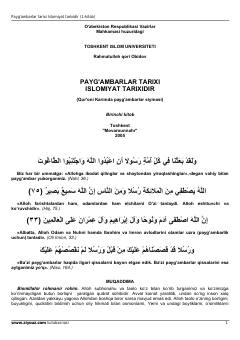

PTQur'oni Karim asosida payg'ambarlar tarixi va Islomiyat bayoniga bag'ishlangan kitob.
Mazkur kitobda Qur'oni Karimda zikr etilgan payg'ambarlarning hayoti, Islom tarixi va ularning ilohiy vazifalari haqida batafsil hikoya qilinadi. Asar Toshkent islom universiteti tomonidan chop etilgan bo'lib, koinotning yaratilishi, farishtalar va jinlar haqidagi diniy ma'lumotlarni ham o'z ichiga oladi.